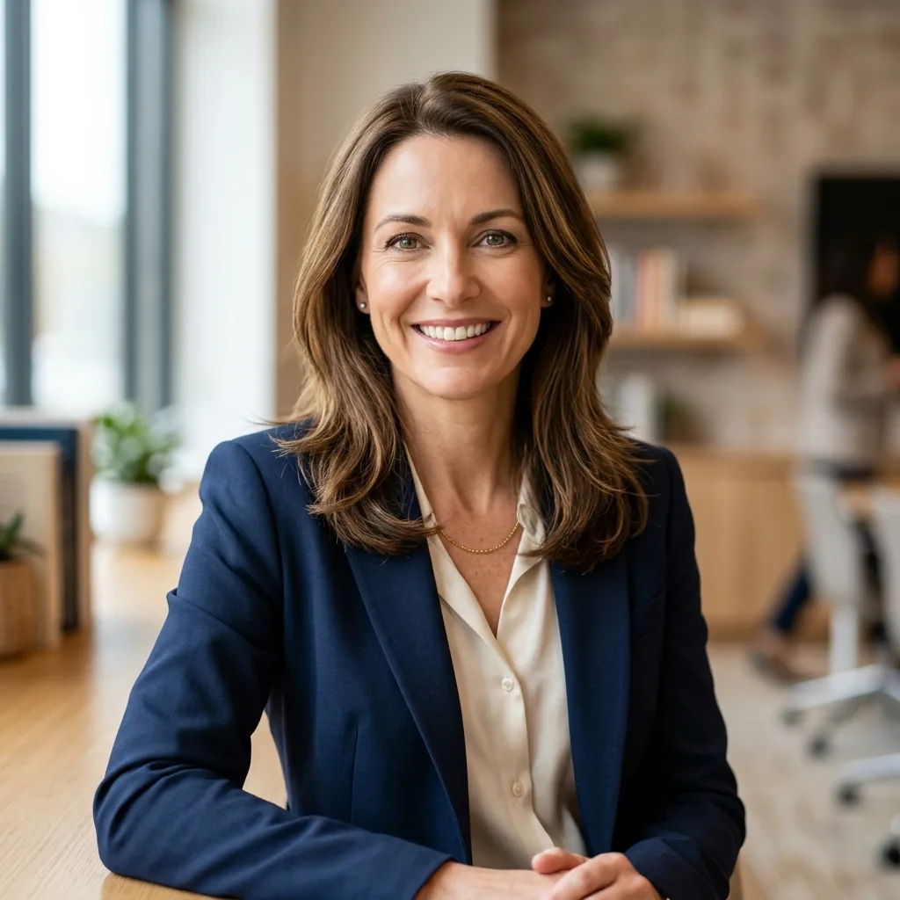

Yeni bir ülkeye taşınmak ya da IB veya A-Level gibi zorlu bir müfredata geçiş yapmak öğrenciler için bunaltıcı olabilir. Çoğu zaman başarısızlığın nedeni zeka eksikliği değil — doğru öğrenme stratejileri, zaman yönetimi ve akademik özgüven eksikliğidir. Biz bu boşluğu kapatıyoruz.
Moving to a new country or transitioning to a highly rigorous curriculum like the International Baccalaureate (IB) or British A-Levels can be overwhelming. Often, the barrier isn't a lack of intelligence — it's a lack of the right learning strategies, time management, and academic confidence. We bridge that gap.
Özel öğretmen çocuğunuza belirli bir konuyu öğretir — matematik, kimya gibi. Akademik Koç ise çocuğunuza nasıl öğreneceğini öğretir.
A tutor teaches a specific subject — like math or chemistry. An Academic Coach teaches your child how to learn.
Sürdürülebilir alışkanlıklar, bilişsel dayanıklılık ve organizasyon sistemleri inşa ediyoruz — üniversiteye ve ötesine taşınan beceriler. Sınav haftası değil, tüm yıl boyunca işe yarayan bir çerçeve.
We focus on building sustainable habits, cognitive resilience, and organizational systems that stick with them through university and beyond — a framework that works not just for exam week, but for every week.
At Edualist, we don't just help your child find a school; we coach them to master the school system, manage their workload, and unlock their full academic potential.
Edualist olarak yalnızca okul bulmakla kalmıyoruz; çocuğunuzu okul sisteminde ustalaşmak, iş yükünü yönetmek ve tam akademik potansiyelini ortaya çıkarmak için koçluk yapıyoruz.
Konuya odaklanır. "Bu denklemi nasıl çözersin?" sorusunu yanıtlar. Kısa vadeli bir çözüm.
Subject-focused. Answers "how do you solve this equation?" A short-term fix.
Öğrenmeye odaklanır. "Nasıl daha iyi öğrenirsin?" sorusunu yanıtlar. Uzun vadede tüm dersleri etkileyen bir sistem.
Learning-focused. Answers "how do you learn better?" A long-term system that improves performance across all subjects.
Koçluğumuz üç temel geçiş senaryosu için özelleştirilmiştir.
Our specialized coaching is designed for three core transition scenarios.
Ulusal sistemden IB (PYP, MYP, DP) veya İngiliz müfredatına (IGCSE, A-Level) geçiş yapan öğrenciler. Yeni değerlendirme sistemi, beklentiler ve çalışma yöntemi konusunda rehberlik.
Students moving from national systems to IB (PYP, MYP, DP) or British frameworks (IGCSE, A-Level). Guidance on the new assessment system, expectations, and study approach.
Yeni küresel okul ortamının stresini ve "akademik kültür şoku"nu yöneten öğrenciler. Farklı pedagojik yaklaşımlara adaptasyon, akran dinamikleri ve özgüven inşası.
Students managing the stress and "academic culture shock" of a new global school environment. Adapting to different pedagogical approaches, peer dynamics, and building academic confidence.
Yalnızca İngilizce öğretime uyum sağladıkları için notları geçici olarak düşen zeki öğrenciler. Akademik İngilizce stratejileri ve içeriği dil engelinden bağımsız kavrama yöntemleri.
Bright students whose grades are temporarily suffering because they're adjusting to English-only academic instruction. Academic English strategies and content comprehension methods independent of language barriers.
Sadece bir danışman değil — haftalık sistemi olan, çocuğunuzun akademik yolculuğunu bilen bir koç.
Not just a consultant — a coach with a weekly system who knows your child's academic journey inside out.
Çocuğunuzun IB yılını, mevcut zorluklarını ve hedeflerini anlatan kısa bir değerlendirme formunu doldurursunuz. 5 dakika sürer, tamamen ücretsizdir.
Fill in a short assessment form about your child's IB year, current challenges, and goals. Takes 5 minutes and is completely free.
Değerlendirme sonuçlarına göre Özlem sizi arar. Bu görüşmede çocuğunuzun profilini, okul sistemini ve birlikte neler yapabileceğinizi konuşursunuz. Taahhüt gerektirmez.
Based on your assessment, Özlem will call you. You'll discuss your child's profile, their school system, and what you can work on together. No commitment required.
İlk seansla birlikte çocuğunuzun öğrenme profili, öncelikli geliştirme alanları ve ilk 30 günlük aksiyon planı hazırlanır. Her şeyin yazılı olduğu bir yol haritanız olur.
Starting with the first session, your child's learning profile, priority areas, and a 30-day action plan are mapped out. You get a written roadmap of everything.
Her hafta 2 kez Zoom'da buluşursunuz. Her seans sonrası haftalık aksiyon raporu e-postayla gelir. Çocuğunuz için en uygun adımları bilirsiniz.
Meet twice a week on Zoom. After each session, you receive a weekly action report by email. You'll always know the most important next steps for your child.
"Dubai'ye taşındıktan sonra oğlumuz yeni müfredatla tamamen bunaldı. Özlem hem oğluma nasıl yaklaşacağımızı hem de hangi adımları atmamız gerektiğini net olarak gösterdi."
"After moving to Dubai our son was completely overwhelmed by the new curriculum. Özlem showed us clearly how to approach him and what steps to take. We felt supported for the first time."
"Kızımız IB'ye geçince notları düştü, özgüveni sarsıldı. Özlem 3 ayda hem notları hem de gülüşü geri getirdi. 'Akademik kültür şoku' denen şeyin ne olduğunu artık anlıyoruz."
"When our daughter transitioned to IB, her grades dropped and her confidence crumbled. Özlem restored both in 3 months. We finally understand what 'academic culture shock' actually means."
"Our son came from a Turkish school and his English was functional but not academic. Özlem built a system around his strengths — within two months his teachers noticed the difference."
"Oğlumuz Türk okulundan geldi, İngilizcesi günlük düzeydeydi. Özlem güçlü yönleri üzerine bir sistem kurdu — iki ay içinde öğretmenleri farkı fark etti."
"Kızım Dubai'de uluslararası okulda başladı, biz Türkiye'deydik. Özlem online olarak hem bize hem kızıma yol gösterdi. Mesafe hiç engel olmadı."
"My daughter started at an international school in Dubai while we were still in Turkey. Özlem guided both us and our daughter online. Distance was never a barrier."
"Oğlum A-Level'e geçişte ciddi zorlandı; bu sistemin ne getirdiğini hiç bilmiyorduk. Özlem'le 4 ay sonra tamamen farklı bir özgüvenle devam ediyor. Yapılandırılmış yaklaşımı olmasaydı bu mümkün olmazdı."
"Our son really struggled with the A-Level transition — we had no idea what the system demanded. After 4 months with Özlem he is continuing with a completely different confidence. Without her structured approach this wouldn't have been possible."
"Çocuğumuzun okul danışmanıyla randevu almak 3 hafta sürüyordu. Özlem haftada iki kez yanımızdaydı. Bu fark çok büyük — akademik koçluk ve okul danışmanlığı tamamen farklı şeyler."
"Getting an appointment with our child's school counsellor took 3 weeks. Özlem was with us twice a week. That difference is enormous — academic coaching and school counselling are completely different things."

20 yılı aşkın süre TED İstanbul Koleji, ENKA Okulları ve IICS'de IB uzmanı olarak çalıştı. Singapur, Myanmar, Fransa, Azerbaycan ve Dubai'de expatriyat anne olarak çocuklarını uluslararası okullarda okuttu. Harvard Eğitim Yüksekokulu mezunu.
Özlem spent 20+ years as an IB specialist at TED Istanbul College, ENKA Schools and IICS. She is an expat mother who raised children in international schools across Singapore, Myanmar, France, Azerbaijan and Dubai. Harvard Graduate School of Education alumna.
Özel öğretmen belirli bir konuyu öğretir. Akademik koç ise çocuğunuza nasıl öğreneceğini öğretir — öğrenme stratejileri, zaman yönetimi ve akademik özgüven. Seanslar hem ebeveyne hem de öğrenciye yönelik olabilir; Özlem her ailenin ihtiyacına göre yapılandırır.
A tutor teaches a specific subject. An academic coach teaches your child how to learn — learning strategies, time management, and academic confidence. Sessions can target both parents and students; Özlem structures each engagement around the family's specific needs.
Haftada 2 kez Zoom üzerinden birebir görüşme yapıyoruz. Her seans yaklaşık 60 dakikadır. Seans tarihleri her ayın başında karşılıklı belirlenir. Paket; seansların yanı sıra haftalık yazılı aksiyon planı ve mesai saatleri içinde WhatsApp erişimi de içerir.
We meet twice a week via Zoom for 1-on-1 sessions of about 60 minutes each. Session dates are set together at the start of each month. The package also includes a weekly written action plan and WhatsApp access during business hours.
Yeni okul veya müfredatın ilk haftalarında başlamak idealdir — alışkanlıklar ve sistemler bu dönemde şekillenir. Ancak yıl ortasında, zorluğun ortasında ya da sınav öncesinde de başlanabilir. Her aşamanın farklı öncelikleri vardır ve Özlem buna göre plan yapar.
Starting in the first weeks of a new school or curriculum is ideal — habits and systems form early. However it's equally possible to start mid-year, deep in difficulty, or approaching exams. Every stage has different priorities and Özlem plans accordingly.
Minimum 1 ay taahhüdü yeterlidir. İptal etmek istediğinizde en az 1 hafta öncesinden bildirmeniz yeterli. Aylık 900 AED, seans başına faturalandırılmaz; paket olarak sunulur.
A minimum of 1 month is all that's required. To cancel, simply give 1 week's notice. The 900 AED/month is a package fee — not per-session billing.
Hayır — tamamen online olduğundan dünyanın her yerinden ebeveynlerle çalışıyoruz. Dubai, Türkiye, İngiltere, Almanya, Hollanda ve Kanada'daki ailelerle aktif seanslar yapılmaktadır.
No — because it's fully online, we work with parents from anywhere in the world. Active sessions run with families in Dubai, Turkey, the UK, Germany, the Netherlands and Canada.
eduentry.com'daki ücretsiz değerlendirmeyi doldurun. Özlem sonuçlarınıza göre sizi arayacak — taahhüt yok, satış baskısı yok.
Complete the free assessment at eduentry.com. Özlem will call you based on your results — no commitment, no sales pressure.
eduentry.com'da Değerlendirme Yap → Start Assessment at eduentry.com →